Jimi Hendrix
 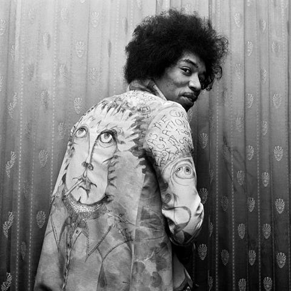
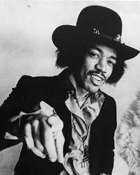
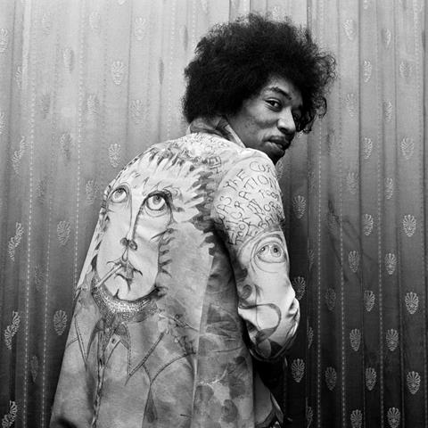
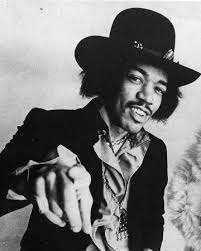
 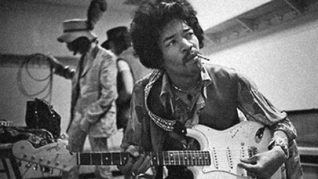
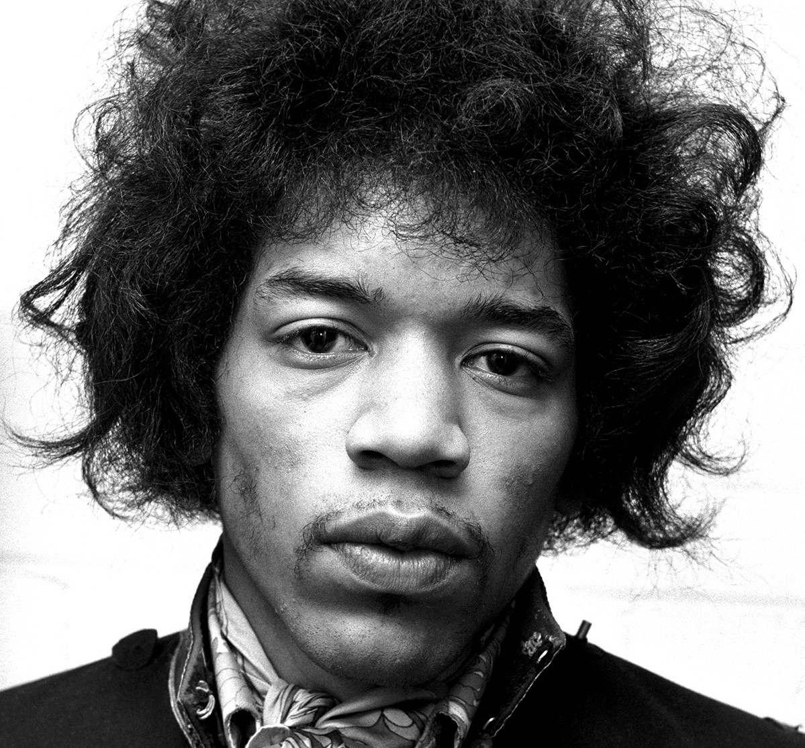
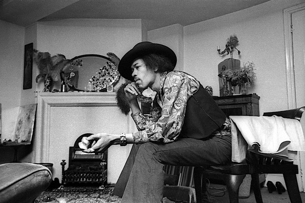
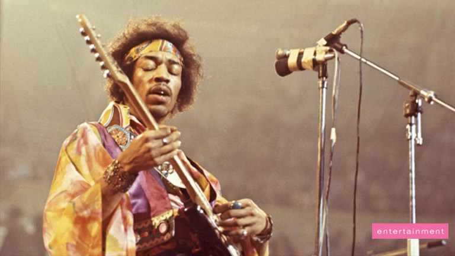
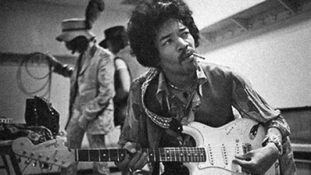
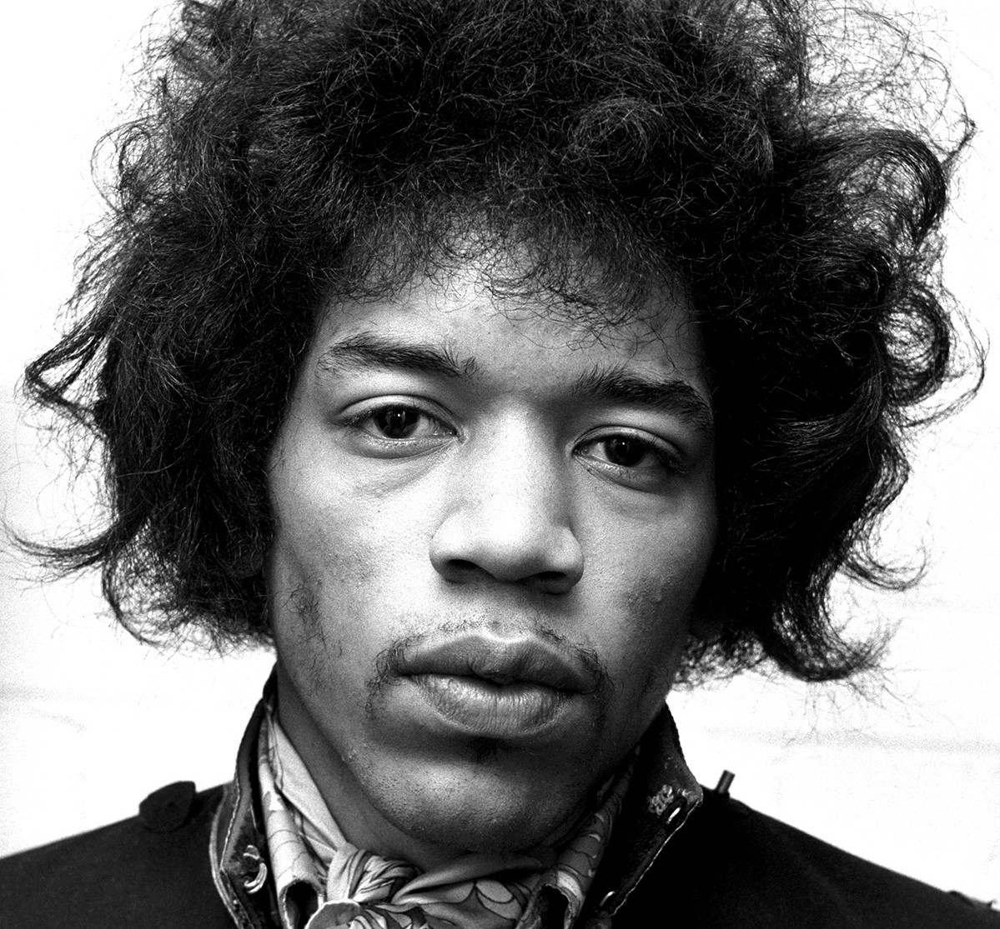
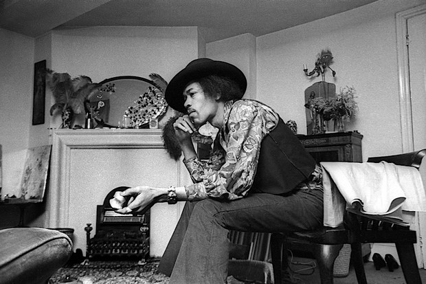
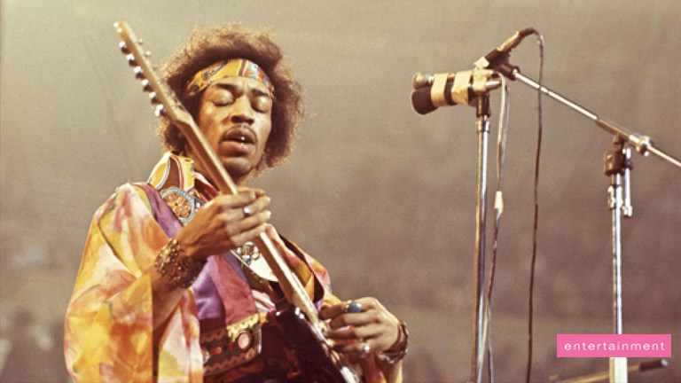
One of the Greatest Guitar Players Ever.
Down the street you can hear her scream you're a disgrace
As she slams the door in his drunken face
And now he stands outside
And all the neighbors start to gossip and drool
He cries oh, girl you must be mad,
What happened to the sweet love you and me had?
Against the door he leans and starts a scene,
And his tears fall and burn the garden green
And so castles made of sand fall in the sea, eventually
A little Indian brave who before he was ten,
Played war games in the woods with his Indian friends
And he built up a dream that when he grew up
He would be a fearless warrior Indian Cheif
Many moons past and more the dream grew strong until
Tomorrow he would sing his first war song and fight his first battle
But something went wrong, surprise attack killed him in his sleep that night
And so castles made of sand melts into the sea, eventually
There was a young girl, who's heart was a frown
Cause she was crippled for life,
And she couldn't speak a sound
And she wished and prayed she could stop living,
So she decided to die
She drew her wheelchair to the edge of the shore
And to her legs she smiled you wont hurt me no more
But then a sight she'd never seen made her jump and say
Look a golden winged ship is passing my way
And it really didn't have to stop, it just kept on going...
And so castles made of sand slips into the sea, eventually